Tap a marker to jump to its checklist entry. “Show on image” opens that structure in place. Tap between markers to enlarge the specimen. In Self-test the keys start closed.
Orientation and quick review
Start here: layers and regional landmarks
Extrinsic muscles originate developmentally outside the intrinsic back muscle mass and lie on the back; superficial muscles move the upper limb or scapula, and intermediate serratus posterior muscles act on ribs. Intrinsic muscles develop in the back and mostly receive posterior rami.
Superficial: splenius. Intermediate: erector spinae, lateral to medial iliocostalis, longissimus, spinalis. Bilaterally extends; unilateral activity produces same-side lateral flexion and can assist same-side rotation. Deep: semispinalis, multifidus, rotatores (superficial to deep). Deepest: short segmental muscles.
C1–C7 cervical, T1–T12 thoracic, L1–L5 lumbar, then sacrum and coccyx. Cervical and lumbar curves are lordoses; thoracic and sacral curves are kyphoses. Orient each specimen by locating its body and spinous process.
Multifidus is thickest in the lumbar region; bundles usually cross two to four levels and stabilize segments. Interspinales join spinous processes, intertransversarii join transverse processes, and levatores costarum elevate ribs.
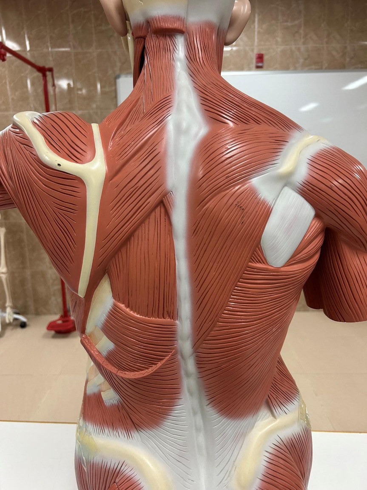
Superficial and intermediate extrinsic muscles
Open originalIdentification key & checklist
From transverse processes of C1–C4 to the medial scapular border above the spine. Elevates and downwardly rotates the scapula. Dorsal scapular nerve plus C3–C4 branches.
Show on imageNuchal ligament and C7–T1 spinous processes to the medial end of the scapular spine. Retracts and stabilizes the scapula. Dorsal scapular nerve.
Show on imageT2–T5 spinous processes to the medial scapular border below the spine. Retracts and downwardly rotates the scapula. Dorsal scapular nerve.
Show on imageOcciput, nuchal ligament and C7–T12 spinous processes to lateral clavicle, acromion and scapular spine. Upper elevates, middle retracts, lower depresses; upper and lower fibres help rotate the glenoid upward. Motor: spinal accessory nerve (cranial nerve XI).
Show on imageLower thoracic spine, thoracolumbar fascia, iliac crest and lower ribs to the floor of the intertubercular groove. Extends, adducts and medially rotates the humerus; climbing muscle. Thoracodorsal nerve.
Show on imageDeep to latissimus dorsi. From lower thoracic and upper lumbar spinous processes to ribs 9–12. T9–T12 anterior rami (T12 is subcostal). Classically depresses lower ribs; proprioception is also proposed.
Show on image
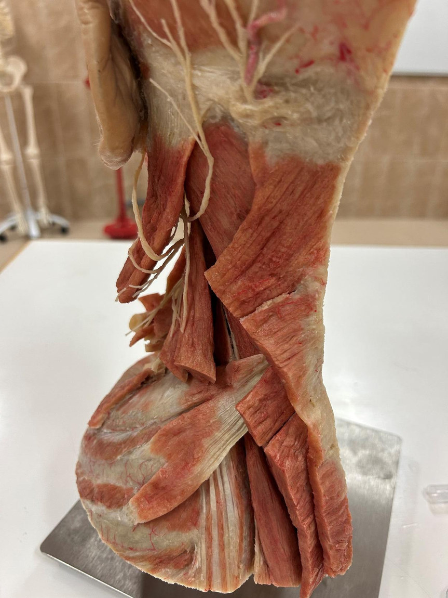
Serratus posterior superior
Open originalIdentification key & checklist
Deep to rhomboids. Runs from lower nuchal ligament and C7–T3 spinous processes to ribs 2–5; supplied by intercostal nerves T2–T5. Classically elevates upper ribs; not a vertebral extensor.
Show on image
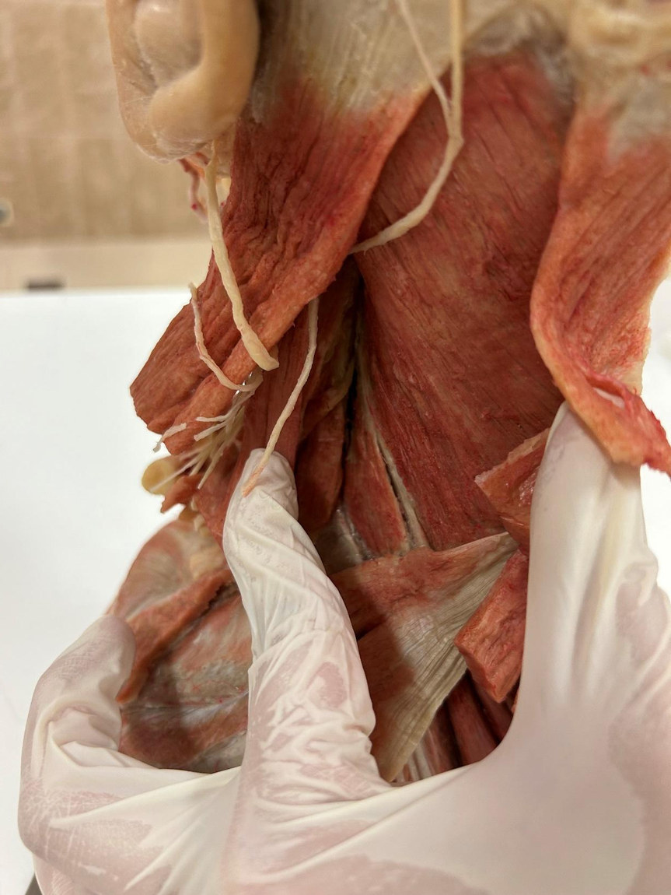
Splenius: superficial intrinsic layer
Open originalIdentification key & checklist
Lower nuchal ligament and upper thoracic/lower cervical spinous processes to mastoid process and lateral superior nuchal line. Capitis reaches the head.
Show on imageUpper thoracic spinous processes to upper cervical transverse processes. Does not attach to the skull. The annotated slide groups the origins; cervicis specifically originates from upper thoracic spinous processes.
Show on image
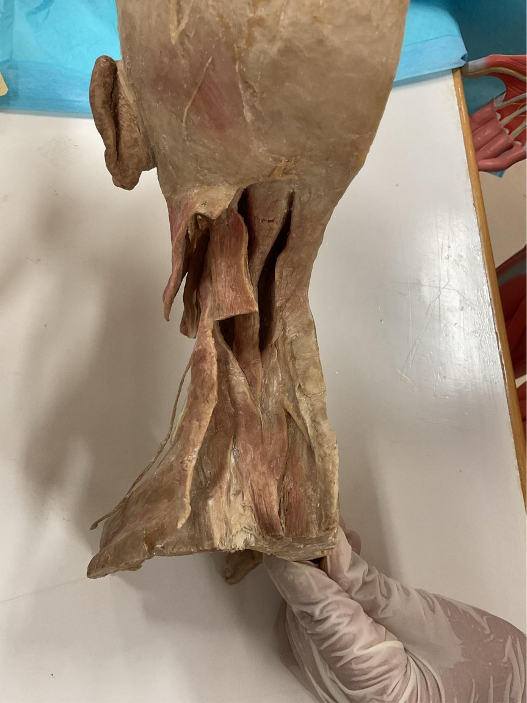
Splenius on a second neck specimen
Open originalIdentification key & checklist
Trace the band upward and outward toward the mastoid. Splenius means bandage. Bilaterally extends the head and neck; unilaterally rotates and laterally flexes to the same side.
Show on imageTrace toward upper cervical transverse processes. Splenius muscles receive posterior rami of cervical spinal nerves.
Show on image
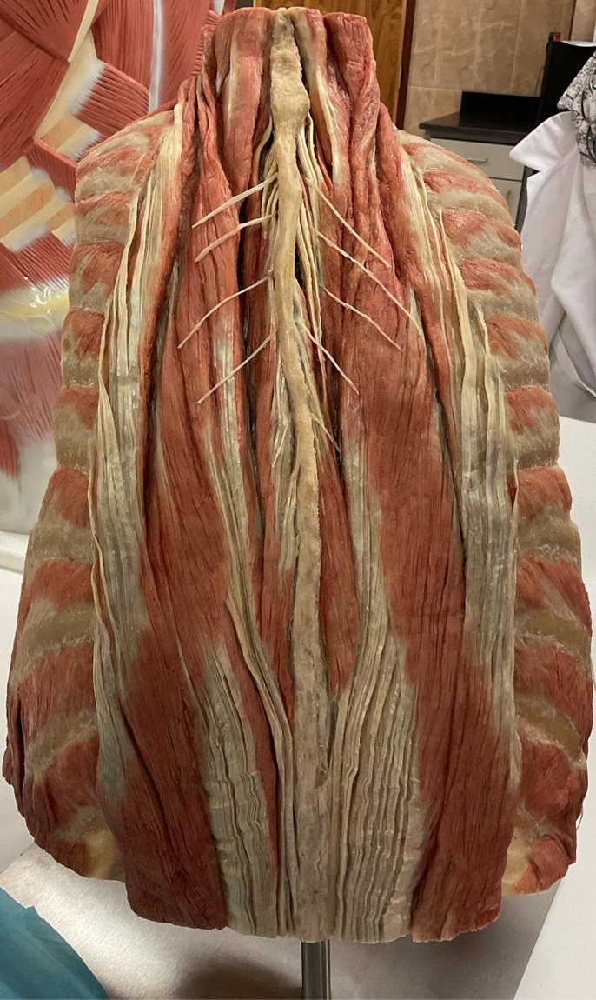
Erector spinae: three columns
Open originalIdentification key & checklist
Lateral column; from upper ribs to cervical transverse processes.
Show on imageLateral column; rib-to-rib bundles between the lower and upper ribs.
Show on imageLateral column; common lower attachment with fibres ascending toward lower ribs and lumbar transverse processes. Iliocostalis never reaches the skull.
Show on imageIntermediate column; reaches the mastoid process. Look for the headward continuation.
Show on imageIntermediate column; thoracic transverse processes to cervical transverse processes.
Show on imageIntermediate column; thoracic transverse processes and adjacent ribs. The erector columns share a broad inferior attachment; iliocostalis is not the only column with a lumbar-region attachment.
Show on imageMedial column, close to spinous processes. Cervical slip may be variable.
Show on imageMost medial erector column; follows thoracic spinous processes. Spinalis capitis is often indistinct or blended with semispinalis capitis.
Show on image
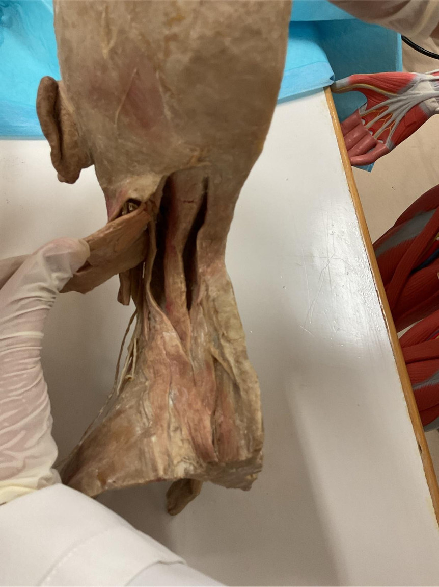
Longissimus and semispinalis at the neck
Open originalIdentification key & checklist
Look for the more lateral strip ascending to the mastoid, rather than the broad strip inserting on the occiput.
Show on imageMore medial; inserts between the superior and inferior nuchal lines. Semispinalis is the most superficial transversospinalis muscle; multifidus and rotatores lie deeper. Unilateral transversospinalis activity generally rotates to the opposite side.
Show on image
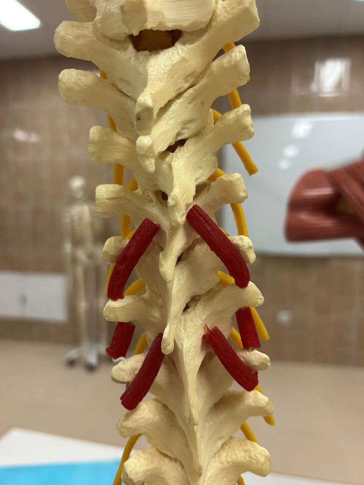
Short segmental muscles on the model
Open originalIdentification key & checklist
Oblique fibres from a transverse process to the lamina/spinous region two levels above, skipping one vertebra. Rotatores are best developed in the thoracic region.
Show on imageShort oblique fibres reaching the next vertebra, with no level skipped. Help segmental control and proprioception.
Show on imageShort, more vertical slips between adjacent transverse processes. Compare with the oblique rotatores. Interspinales instead link adjacent spinous processes; levatores costarum run from transverse processes to ribs.
Show on image
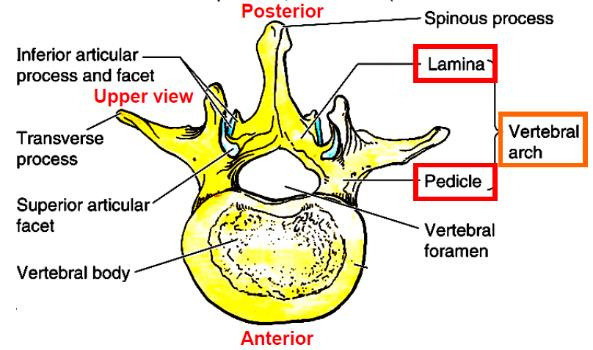
Typical vertebra: superior view
Open originalIdentification key & checklist
The anterior weight-bearing mass. Identify it before orienting the processes.
Show on imageOpening enclosed by the body and vertebral arch; serial foramina form the vertebral canal.
Show on imageShort cylindrical bridge from the body to the arch. There is one on each side.
Show on imageFlattened posterior portion of the arch, between the articular region and spinous process.
Show on imageSingle midline posterior projection.
Show on imageOne lateral projection on each side. Count seven processes: one spinous, two transverse and four articular.
Show on imagePaired superior and paired inferior processes. Each bears a facet for a joint with the adjacent vertebra.
Show on image
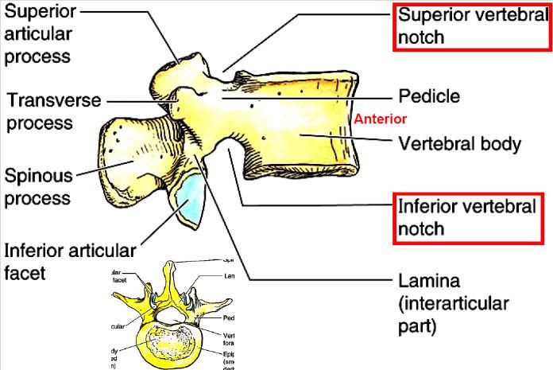
Typical vertebra: lateral view and notches
Open originalIdentification key & checklist
From the side, distinguish the large body from the narrow pedicle immediately posterior to it.
Show on imageShallow indentation on the upper edge of the pedicle.
Show on imageDeeper indentation on the lower edge. Adjacent vertebrae complete the intervertebral foramen.
Show on imageProjects superiorly; its facet meets the inferior facet of the vertebra above.
Show on imageFaces the corresponding superior facet below. The lamina lies posterior to the pedicle.
Show on image
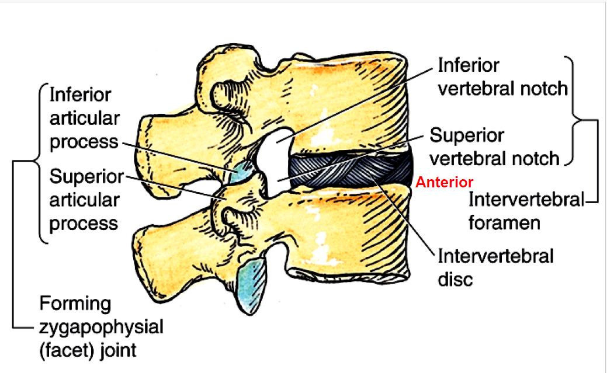
Adjacent vertebrae: disc, foramen and facet joint
Open originalIdentification key & checklist
Between adjacent bodies. Fibrous annulus surrounds the nucleus pulposus; no disc between the skull and C1 or between C1 and C2.
Show on imageLateral opening bounded by adjacent pedicle notches, the disc/body anteriorly and the facet region posteriorly. A spinal nerve passes through it.
Show on imageZygapophysial joint between the inferior articular process of the upper vertebra and superior process of the lower vertebra.
Show on image
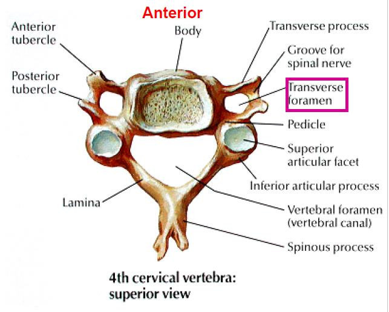
Typical cervical vertebra: C4
Open originalIdentification key & checklist
Compare with the large lumbar body.
Show on imageCentral opening; distinguish it from the much smaller paired transverse foramina.
Show on imageIn each short transverse process. Vertebral artery usually enters at C6 and ascends through C6–C1; C7 usually does not transmit it.
Show on imageShort posterior process often bifid at C2–C6. C7 usually has a long, palpable, nonbifid process.
Show on imageFlank the groove for a spinal nerve on a typical cervical transverse process.
Show on image
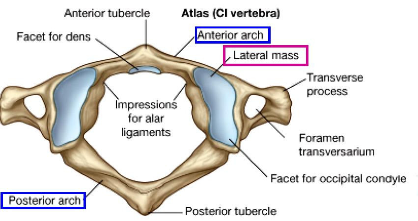
Atlas: C1
Open originalIdentification key & checklist
Atlas is ring shaped with no true body or spinous process. Its anterior arch has a facet for the dens on its posterior surface.
Show on imageConcave facet receives the occipital condyle. The atlanto-occipital joint permits nodding.
Show on imagePosterior tubercle replaces a true spinous process. The vertebral artery grooves the superior surface of the posterior arch.
Show on imageProject lateral to the lateral mass.
Show on image
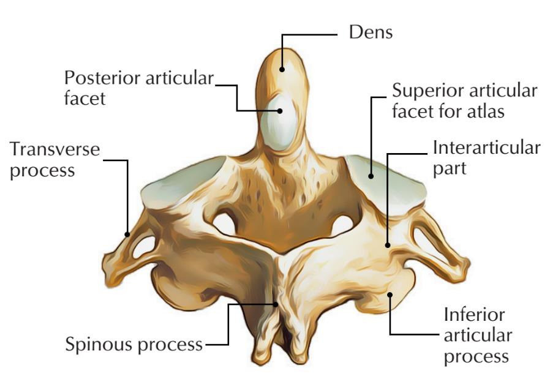
Axis: C2
Open originalIdentification key & checklist
Vertical projection from the body of C2. It acts as the pivot for rotation of the atlas and head.
Show on imageLateral to the dens; articulates with the inferior facet of C1.
Show on imageLarge and usually bifid. Contrast with the posterior tubercle of atlas.
Show on image
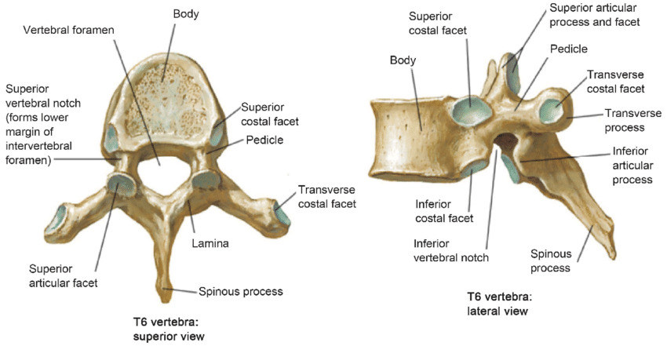
Thoracic vertebra: superior and lateral views
Open originalIdentification key & checklist
Typical thoracic identifier. T1–T12 are the twelve thoracic levels.
Show on imageSmaller and rounder than the typical cervical foramen.
Show on imageBest assessed in the lateral view. Most pronounced in mid-thoracic levels.
Show on imageRib heads articulate with costal facets or demifacets; arrangements vary at the upper and lower levels.
Show on imageRib tubercle articulation on T1–T10. T11 and T12 lack transverse costal facets.
Show on image
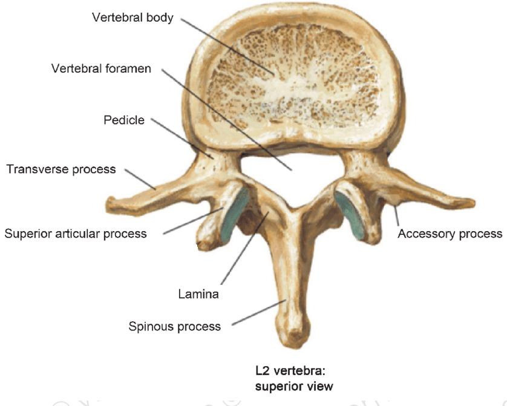
Lumbar vertebra: L2
Open originalIdentification key & checklist
A broad weight-bearing mass; five lumbar levels L1–L5.
Show on imageCentral triangular opening; no transverse foramina or costal facets.
Show on imageExtends laterally; the small accessory process is near its base.
Show on imageBlunt, broad posterior projection, unlike the down-sloping thoracic spine.
Show on image
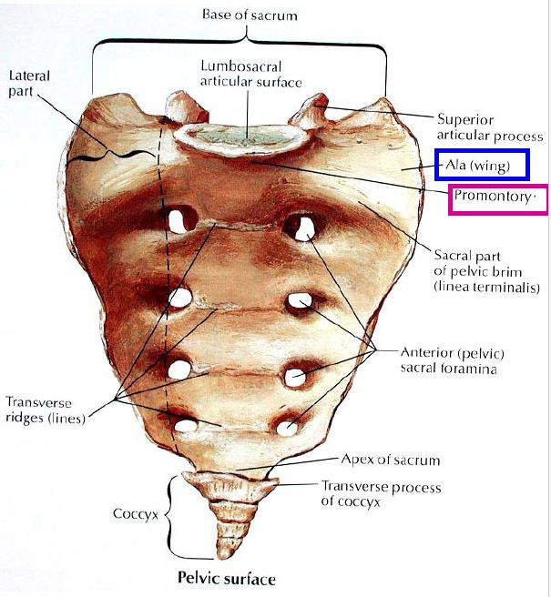
Sacrum: pelvic surface
Open originalIdentification key & checklist
Anterior projecting margin of the S1 body at the superior base.
Show on imageWing lateral to the upper sacral body.
Show on imageFour pairs for anterior rami; the pelvic surface is relatively smooth and concave.
Show on imageFusion lines between the bodies of the five sacral segments.
Show on image
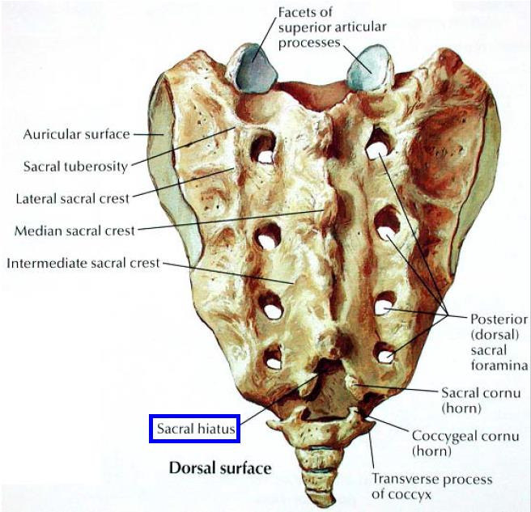
Sacrum: dorsal surface and sacroiliac landmarks
Open originalIdentification key & checklist
Midline ridge formed by fused spinous processes. Intermediate and lateral crests lie farther laterally.
Show on imageTransmit posterior rami. Compare with the larger openings on the pelvic surface.
Show on imageInferior opening of the sacral canal where the lower laminae fail to close.
Show on imagePaired projections flanking the hiatus; distinguish them from the coccygeal cornua below.
Show on imageAuricular surface articulates with ilium; rough sacral tuberosity is for strong sacroiliac ligaments.
Show on image
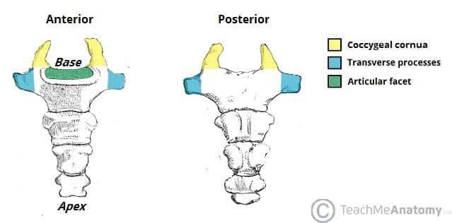
Coccyx: anterior and posterior views
Open originalIdentification key & checklist
Upward projections of the first coccygeal segment. Articulate with the sacral cornua.
Show on imageBest developed on the first segment. The base faces the sacrum; the apex is inferior.
Show on image
Practical quiz · 24 spotters
Use “View Figure” to open the specimen. The quiz shows only the requested marker where needed; some supplied diagrams retain their printed labels.
Source figures: Muscles of the back (original and annotated versions) and Vertebral Column check list. Repeated photos from the two slide versions are shown once with their labels combined. Further revision: Vertebral Column lectures. Anatomy reference: Back muscles and cervical vertebrae.